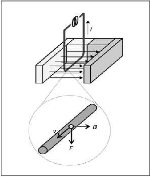
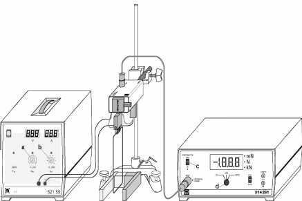
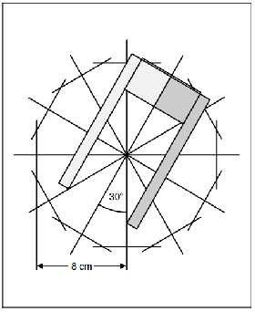
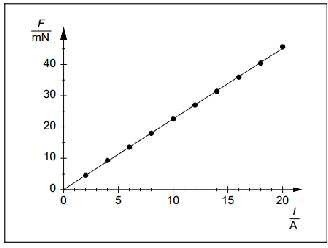
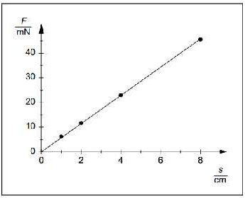
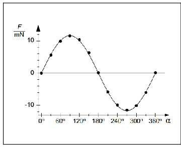

Taqasimon magnit maydonida tokli ötkazgiçga ta’sir etuvçi kuçni ölçaş
1Işning maqsadi va kutilayotgan natijalar
Taqasimon magnit maydonida tokli ötkazgiçga ta’sir etuvçi kuçni: (1) tok kuçining; (2) ötkazgiç uzunligining; (3) magnit maydon va tok yönalişlari orasidagi burçakning funksiyasi sifatida ölçaş va magnit maydon induksiyasini hisoblaş.
Fan dasturidagi ta’lim natijalari: TN2 — Fizik hodisalarni tajribada namoyiş qiliş, ölçov işlarini bajariş va natijalar aniqligini ta’minlaş; TN5 — Ölçaş natijalarini matematik va grafik qayta işlaş, tizimli va tasodifiy xatoliklarni hisoblaş; TN6 — Tajriba natijalarini nazariya bilan soliştiriş, sabab-oqibatni tahlil qiliş va ilmiy asoslangan xulosa çiqariş; TN14 — Tajriba ma’lumotlari asosida grafiklar (VAX, rezonans egri çiziqlari va h.k.) çiziş va tahlil qiliş; TN15 — Ölçaşlarning absolyut, nisbiy xatoliklari va statistik noaniqliklarni hisoblaş.
2Kerakli jihozlar
- Taqasimon magnit (doimiy magnit)
- Kuç sensori va unga ulangan dinamometr (mN, “COMPENSATION” kaliti bilan)
- Ötkazgiç halqalar töplami (gorizontal qismi 1, 2, 4, 8 sm)
- Yuqori tokli manba (20 A gaça), köp özakli ulaş kabeli
- V-şaklidagi kiçik ştativ, 47 sm li ştativ tayoqçasi, Leybold köptutgiç
- Köndalang kesimi 2,5 mm² bölgan ulaş kabellari; burçak ölçaş moslamasi
3Nazariy qism
9.1. Lorens kuçi
Magnit induksiyasi \(\vec B\) — vektor kattalik. \(\vec B\) maydonda \(\vec\upsilon\) tezlik bilan harakatlanayotgan \(q\) zaryadga tezlik va maydonning kattaligi hamda yönalişiga boğliq kuç ta’sir etadi:
$$\vec F=q\,\vec\upsilon\times\vec B.\qquad(9.1)$$Lorens kuçi \(\vec\upsilon\) va \(\vec B\) yotgan tekislikka perpendikulyar yönalgan.

9.2. Amper kuçi
Tokli ötkazgiçga ta’sir etuvçi kuçni tokni hosil qiluvçi, \(\upsilon\) dreyf tezlik bilan harakatlanayotgan alohida zaryad taşuvçilarga ta’sir etuvçi Lorens kuçlarining yiğindisi deb qaraş mumkin:
$$F=q\,n\,S\,l\,(\upsilon B),\qquad(9.2)$$bu yerda \(n\) — zaryad taşuvçilar konsentratsiyasi, \(S\) — ötkazgiç köndalang kesimi, \(l\) — ötkazgiçning maydondagi qismi uzunligi. \(qnS\upsilon=I\) bölgani uçun:
$$\vec F=I\,(\vec l\times\vec B),\qquad(9.3)$$$$F=I\,B\,l\,\sin\alpha,\qquad(9.4)$$\(\alpha\) — maydon va tok yönalişlari orasidagi burçak. Kuç yönalişi çap qöl qoidasi bilan aniqlanadi.
9.3. Ölçaş usuli
20 A gaça tok ötkazadigan töğri törtburçak şaklidagi ötkazgiç halqa taqasimon magnitning gorizontal maydoniga joylaştiriladi va uning gorizontal qismiga ta’sir etuvçi kuç ölçanadi; ikki vertikal qismga ta’sir etuvçi kuçlar özaro kompensatsiyalanadi. Halqa kuç sensoriga ulanadi: sensorning egiluvçan qismidagi tenzorezistorlar qarşiligi kuçga proporsional özgaradi, dinamometr esa şu özgarişni ölçab, kuçni mN da körsatadi.

4Işni bajariş tartibi
a) Kuçning tok kuçiga boğliqligi
- Kengligi 8 sm bölgan halqani kuç sensoriga ulang. Tok dastagi (b) ni çapga, kuçlaniş dastagi (a) ni öngga burib, manbani yoqing.
- Dinamometr nolini kompensatsiyalaş uçun COMPENSATION kaliti (c) ni SET holatiga qöying.
- Tokni 2 A qadam bilan 20 A gaça oşiring va har bir qiymat uçun kuçni 9.1-jadvalga yozing.
- Tokni \(I=0\) ga qaytarib, kuçning nol nuqtasini tekşiring.
b) Kuçning ötkazgiç uzunligiga boğliqligi
- Kengligi 4 sm bölgan halqani ulang va nolni kompensatsiyalang.
- \(I=20\) A örnatib, kuçni yozing; söng \(I=0\) ga qaytarib nolni tekşiring.
- Tajribani 2 sm va 1 sm li halqalar uçun takrorlang (8 sm li natija a) qismdan olinadi).
c) Kuçning burçakka boğliqligi
- Burçak ölçaş moslamasini tayyorlang (9.3-rasm): u magnitni kerakli burçakda aniq joylaştirişni osonlaştiradi.
- Tok dastagini çapga burib, 4 sm li halqani ulang. Moslamani halqa ostiga markazi halqa gorizontal qismining örtasiga töğri keladigan qilib qöying.
- Magnitni maydon halqaning gorizontal qismiga parallel böladigan qilib joylaştiring (\(\alpha=0^\circ\)) va nolni kompensatsiyalang.
- \(I=10\) A örnating. Magnitni 30° qadam bilan 360° gaça burib, har bir burçak uçun kuçni yozing.
- Tokni nolga qaytarib, nol nuqtani tekşiring.

9.1-jadval. F kuç tok kuçining funksiyasi sifatida (l = 8 sm)
| I, A | 0 | 2 | 4 | 6 | 8 | 10 | 12 | 14 | 16 | 18 | 20 |
|---|---|---|---|---|---|---|---|---|---|---|---|
| F, mN |
Jadval katakçalariga bevosita yoziş mumkin (ma’lumotlar sahifa yopilganda saqlanmaydi — hisobotga köçirib oling).
9.2-jadval. F kuç ötkazgiç uzunligining funksiyasi sifatida (I = 20 A)
| l, sm | 8 | 4 | 2 | 1 |
|---|---|---|---|---|
| F, mN |
Jadval katakçalariga bevosita yoziş mumkin (ma’lumotlar sahifa yopilganda saqlanmaydi — hisobotga köçirib oling).
9.3-jadval. F kuç α burçakning funksiyasi sifatida (l = 4 sm, I = 10 A)
| α, ° | 0 | 30 | 60 | 90 | 120 | 150 | 180 | 210 | 240 | 270 | 300 | 330 | 360 |
|---|---|---|---|---|---|---|---|---|---|---|---|---|---|
| F, mN |
Jadval katakçalariga bevosita yoziş mumkin (ma’lumotlar sahifa yopilganda saqlanmaydi — hisobotga köçirib oling).
5Natijalarni qayta işlaş va xatoliklar
a) \(F(I)\) grafigi koordinata boşidan ötuvçi töğri çiziq böladi (9.4-rasm). Namunaviy ölçaşda qiyalik \(F/I=2{,}26\) mN/A; \(\sin90^\circ=1\) ni hisobga olib (9.4) dan:
$$B=\frac{F}{Il}=\frac{2{,}26\ \text{mN}}{\text{A}\cdot0{,}08\ \text{m}}\approx28{,}3\ \text{mT}.$$b) \(F(l)\) grafigi ham töğri çiziq (9.5-rasm): qiyalik \(F/l=572\) mN/m, demak \(B=\dfrac{572\ \text{mN/m}}{20\ \text{A}}=28{,}6\) mT.
c) \(F(\alpha)\) boğlanişi sinusoida (9.6-rasm): \(F_{\max}=IBl\) \(\alpha=90^\circ\) va \(270^\circ\) da (işorasi qarama-qarşi), \(\alpha=0^\circ, 180^\circ\) da kuç nolga teng. Amplitudadan \(B=F_{\max}/(Il)\) topiladi.
Uçala usulda olingan \(B\) qiymatlarini soliştiring; \(B\) ni eng kiçik kvadratlar usuli bilan topilgan qiyalikdan hisoblang.



Xatoliklar nazariyasi: laboratoriyaga kiriş bölimi.
Takroriy ölçaşlar kalkulyatori
Eng kiçik kvadratlar usuli (töğri çiziq y = kx + b)
6Namunaviy hisob
Şart. Kengligi \(l=8{,}0\) sm halqa uçun \(I=12\) A da dinamometr \(F=27{,}2\) mN körsatdi. \(B\) ni toping. Şu maydonda 4 sm li halqa \(I=10\) A da \(\alpha=30^\circ\) burçakda qanday kuç körsatadi?
Yeçimni körsatiş
\(B=F/(Il)=0{,}0272/(12\cdot0{,}08)=28{,}3\) mT. \(F=IBl\sin\alpha=10\cdot0{,}0283\cdot0{,}04\cdot0{,}5=5{,}7\) mN.
7Virtual laboratoriya: Tokli ötkazgiçga ta’sir etuvçi kuç
- Magnit induksiyasi 0,2 tesla, tok 2 amper, ötkazgiç uzunligi 4 santimetr. Amper kuçi 16 millinyuton, tarozi 1,63 gramm özgariş körsatmoqda.
- Tok yönalişini almaştiramiz. Kuç yönalişi ham teskari böldi, tarozi körsatişi manfiy.
- Ötkazgiçni maydonga 30 gradus burçak ostida qöyamiz. Kuç yarmiga kamaydi, çunki sinus 30 gradus 0,5 ga teng.
- Namoyiş tugadi. Endi parametrlarni özingiz özgartirib, natijalarni jadvalga yozing.
Virtual laboratoriyadagi topşiriqlar
- Burçakni 90° dan 30° ga kamaytiring: kuç neça marta kamayadi?
- Modelda \(F(I)\) grafigidan qiyalikni ölçab, \(B\) ni toping va slayder qiymati bilan soliştiring.
- Tok yönalişini almaştiring: tarozi körsatişi qanday özgaradi?
Model öquv maqsadida soddalaştirilgan. “Asbob körsatişi” deb belgilangan qiymatlarga real ölçaşdagi kabi kiçik tasodifiy çetlaniş qöşilgan — takroriy ölçaşlar uçun foydalaning.
8Texnika xavfsizligi
- 20 A tokni faqat qisqa muddat ötkazing — halqa va kabellar qiziydi.
- Kabelning izolyatsiyalanmagan qismlari bir-biriga tegmasligini tekşiring (qisqa tutaşuv).
- Kuçli magnit yaqiniga soat, telefon, bank kartalarini qöymang; magnit qutblari orasiga barmoqni qisib olmang.
- Ulaşlarni faqat tok nolga tuşirilgan holda özgartiring.
9Himoya uçun nazorat savollari
- Amper kuçi deb nimaga aytiladi va u qanday formula bilan aniqlanadi?
- Lorens kuçi qanday ifodalanadi?
- Amper kuçining yönalişi qanday qoida yordamida aniqlanadi?
- Magnit induksiyasi SI tizimida qanday birlikda ölçanadi?
- Tokli ötkazgiçga ta’sir etuvçi kuç ötkazgiç bilan magnit maydon orasidagi burçakka qanday boğliq?
- Tajriba natijalaridan magnit induksiyasi qanday hisoblanadi?
Mustahkamlaş: Nostandart test
Magnit maydoni hosil böladigan vaziyatni körsating: A) harakatlanuvçi elektr zaryadi bor joyda; B) istalgan zaryad atrofida; C) kondensatorlar atrofida; D) elektrolitlarda.
10Nazorat testi (10 savol, öz-özini tekşiriş)
1. \(B=0{,}5\) Tl, \(I=4\) A, \(l=0{,}1\) m, \(\alpha=90^\circ\). Amper kuçi:
2. Ötkazgiç maydon çiziqlariga parallel bölsa, Amper kuçi:
3. Tarozi körsatişi 2,04 g ga özgardi. Kuç:
4. Amper kuçining yönalişi qaysi qoida bilan aniqlanadi?
5. Tok 2 marta, uzunlik ham 2 marta oşirilsa, kuç:
6. Magnit induksiyasining SI birligi:
7. \(\alpha=30^\circ\) bölganda kuç maksimal qiymatning:
8. Elektrodvigatel işlaşi qaysi hodisaga asoslangan?
9. \(F(I)\) grafigi qiyaligi \(k\) bölsa, induksiya:
10. Ikki parallel ötkazgiçda toklar bir xil yönalgan bölsa, ular:
Bu test öz-özini tekşiriş uçun; rasmiy oraliq nazorat HEMIS’da ötkaziladi.
11Sun’iy intellekt bilan işlaş
Men pedagogika oliygohining fizika yönalişi talabasiman. “Taqasimon magnit maydonida tokli ötkazgiçga ta’sir etuvçi kuçni ölçaş” laboratoriya işini bajardim. 1) Mening ölçaş jadvalimni tekşir: birliklar, xonalar soni, aniq xato yozuvlar. 2) Natijani qayta işlaş bosqiçlarini tuşuntir (örtaça, Styudent usuli, bilvosita ölçaş xatoligi), lekin hisobni özim bajaraman. 3) Natijam jadval qiymatidan farq qilsa, mumkin bölgan tizimli xatolik manbalarini sanab ber. 4) Himoya uçun 3 ta savol ber. Çeklov: formulalarni LaTeX’da yoz, işonçing komil bölmagan joyni oçiq ayt. [Şu yerga ölçaş jadvalingizni qöying]
12Adabiyotlar
- [2] Toşxonova J.A. va boşq. Fizikadan praktikum. Elektr va magnetizm. — Toşkent, 2006.
- [5] Nurmatov N. Elektr va magnetizm fanidan praktikum. — 2021.
- [1] Orifjonov S. Elektromagnitizm. — Toşkent, 2011.
- Halliday D., Resnick R., Walker J. Fundamentals of Physics. 12th ed. — Hoboken: Wiley, 2021.
- Purcell E.M., Morin D.J. Electricity and Magnetism. 3rd ed. — Cambridge University Press, 2013.
[1]–[5] — fan dasturidagi asosiy, [Q…] — qöşimça adabiyotlar raqamlanişi. Xalqaro darsliklar çuqurlaştiriş uçun tavsiya etiladi.
Öqituvçi uçun: 80 daqiqalik maşğulot rejasi
| Vaqt | Bosqiç | Faoliyat |
|---|---|---|
| 0–10 | Kiriş nazorati (dopusk) | Himoya savollaridan 2–3 tasi; xavfsizlik böyiça yöriqnoma; jurnalga qayd |
| 10–25 | Yiğiş va sozlaş | Zanjir/qurilmani yiğiş, öqituvçi tekşiruvi; jihoz yetişmasa — virtual laboratoriya |
| 25–55 | Ölçaş | Jadvalni töldiriş, takroriy ölçaşlar; virtual model bilan soliştiriş |
| 55–70 | Qayta işlaş | Grafik, eng kiçik kvadratlar, xatoliklar; kalkulyatorlar bilan tekşiriş |
| 70–80 | Himoya | Xulosa, nazorat savollari; DF bali (JN tarkibida) |
Maşğulot: L13–L14 (fan dasturi böyiça). Batafsil: öqituvçi qöllanmasi.